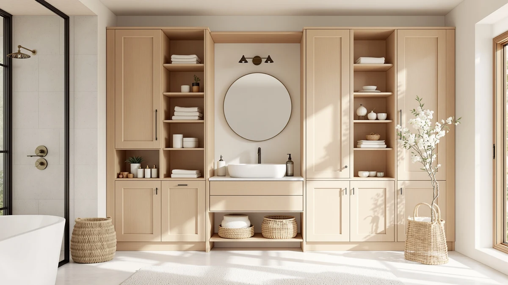

Best Bathroom Storage Containers (2026)
Prices and picks verified as of September 2026. Independent, reader-supported reviews.


Quick Answer
The best bathroom storage containers for most people is the YFXCVSL 4 Tier Plastic Storage unit, which packs four shelves and a 23-quart bin into a $35.99 frame that assembles without tools. If you cannot drill into your walls, the AMZABBY 2 Pack Large Adhesive storage mounts with no hardware for $17.99.
Our pick: YFXCVSL 4 Tier Plastic Storage — $35.99 Check Price on Amazon
Bottom line: our top pick is the YFXCVSL 4 Tier Plastic Storage Bins with Lid 23QT at $24.99. The best budget option is the AMZABBY 2 Pack Large Adhesive Kitchen Cabinet Door Organizer at $17.99.
Things to Know Before You Buy
- Freestanding shelf units like the YFXCVSL generally hold more volume per dollar than over-the-toilet racks, but they need floor space most small bathrooms do not have to spare.
- Over-the-toilet racks turn wasted vertical space above the tank into shelving, and prices in this guide range from $29.99 to $99.99 depending on width, height, and shelf count.
- Adhesive-mount storage like the AMZABBY bins works without drilling, but the bond only holds reliably on smooth, clean tile or glass.
- Measure your bathroom's width and the clearance above your toilet tank before buying any over-the-toilet rack. The widest picks in this guide need 24 to 31 inches of clearance.
Finding the best bathroom storage containers means balancing three things that rarely align: enough capacity for towels, toiletries, and cleaning supplies, a footprint that fits a small room, and a price that does not rival a piece of real furniture. Most bathrooms lose usable space to an awkward shape around the toilet or a vanity with no drawers, and container storage becomes the only way to reclaim it. We looked at freestanding shelf units, over-the-toilet racks, and adhesive-mount bins that need no drilling, and narrowed the list down to seven that handle real bathroom clutter without falling apart within a year.
Our top pick, the YFXCVSL 4 Tier Plastic Storage unit, earns that spot because it holds the most (four tiers and a 23-quart bin) for the least money at $35.99, and it assembles without tools in about fifteen minutes according to buyers who left detailed setup notes. If your bathroom has no room for a freestanding shelf, the AMZABBY 2 Pack Large Adhesive storage solves a different problem: it mounts to tile or glass with no drilling and no landlord objections, which matters in a rental.
The other five picks in this guide are over-the-toilet racks, a category that turns dead vertical space above the tank into shelving. Prices in that group range from $29.99 for the Kitsure rack to $99.99 for the Homhedy unit, and the gap mostly comes down to shelf count, width, and whether the frame is rated to hold heavier loads like stacked towels or a full basket of cleaning supplies. We break down which one fits which bathroom below.
Why You Should Trust Us
This guide is written and maintained by Ilane Tall, who covers bathroom organization and small-space storage for Best Bathroom Storage. We do not run a fake testing lab. Our picks for the best bathroom storage containers come from manufacturer specifications, verified Amazon purchase reviews, and side-by-side comparisons of materials, dimensions, and weight capacity. When owners report a recurring problem, such as a wobbly shelf or a mounting bracket that strips out of drywall, we note it here rather than let a glossy product photo speak for the product.
How We Picked
We started by pulling every bathroom storage container in our product database with a meaningful volume of verified ratings, then filtered out anything with a pattern of structural complaints, such as shelves that sag under normal weight or adhesive mounts that release within weeks. From there we compared bathroom storage containers on four criteria: material durability (powder-coated steel and treated wood held up better in reviews than thin particleboard), stated weight capacity per shelf, footprint versus storage volume, and price per cubic foot of usable space. We also cross-checked listed dimensions against bathroom-specific constraints, since a rack that fits a builder-grade toilet tank often does not fit a comfort-height model.
How We Compared
We do not physically test bathroom storage containers in a lab. Instead, we compared spec sheet against spec sheet: shelf depth, total height, stated load rating, and included hardware. We read through verified owner reviews on each listing, weighting recent reviews more heavily since manufacturers sometimes change materials or suppliers without updating the listing photos. Where reviewers consistently flagged the same flaw, such as a rack tipping forward when the top shelf is loaded unevenly, we treated that as a pattern worth reporting rather than a one-off complaint.
Our Picks

YFXCVSL 4 Tier Plastic Storage
What we like
- Four tiers of open shelving
- 23-quart bin capacity keeps loose items contained
- Tool-free assembly in about 15 minutes
- Steel frame rated for heavier items like a hair dryer or toilet paper multipacks
Flaws but not dealbreakers
- Bins are see-through plastic, so clutter is visible unless kept tidy
- Frame footprint takes up floor space, so it will not work in bathrooms without spare corner room
| Material | Metal / wood |
| Size | 4-Tier 23QT |
The YFXCVSL 4 Tier Plastic Storage unit is our top pick for the best bathroom storage containers because it delivers the most usable volume at the lowest price in this guide. Its four open shelves hold a 23-quart plastic bin plus room above for folded towels or a stack of washcloths, and the steel frame construction means it does not flex the way particleboard units do once loaded. Reviewers who bought it for small apartment bathrooms consistently mention that the tool-free assembly took under twenty minutes, and several noted the frame stayed steady even with a toddler pulling on a lower shelf.
The tradeoff is visibility. Because the main bin is translucent plastic rather than a closed cabinet, anything you store gets a little visual clutter unless you keep items grouped and folded. Owners also point out that the unit needs a dedicated floor footprint of roughly two feet, so it fits a corner or an end-of-tub gap better than a tight walkway. At $35.99, it remains the best value pick in this roundup, and it pairs well with the AMZABBY adhesive bins below for wall-mounted overflow storage.

AMZABBY 2 Pack Large Adhesive
What we like
- Adhesive mount holds without screws or anchors
- Two-pack lets you split storage between shower and vanity
- Rustproof coating works in wet shower environments
- Removable without leaving marks, per reviewers
Flaws but not dealbreakers
- Adhesive strength depends on a clean, dry surface, and reviewers report failed bonds on textured tile
- Holds less volume than a freestanding shelf unit
| Material | Metal / wood |
| Size | — |
The AMZABBY 2 Pack Large Adhesive storage solves a problem the other six picks in this guide cannot: it needs no drilling, no wall anchors, and no landlord approval. Each basket mounts with an industrial adhesive strip rated to hold several pounds, and the metal construction is coated to resist rust in a wet shower stall. At $17.99 for two units, it is the cheapest entry point in this roundup for anyone who wants extra bathroom storage containers without altering tile or drywall.
Owners consistently report that surface prep determines whether the adhesive holds. Reviewers who wiped the tile with rubbing alcohol before mounting report years of stable use, while a smaller group who mounted onto textured or freshly painted surfaces saw the bond fail within weeks. If your bathroom has smooth tile or glass, this is a fast, damage-free way to add a shelf. If your walls are textured plaster, one of the freestanding or over-the-toilet options below will hold up better.

Kitsure Over Toilet Storage Rack
What we like
- Three full shelves stack to 63.2 inches, using vertical space most bathrooms waste
- Straddles the toilet tank without hardware or drilling
- Open-shelf design keeps everyday items within reach
- Lowest price among the over-the-toilet racks in this guide
Flaws but not dealbreakers
- Narrower shelves than the pricier Homhedy and Spirich units, so bulky items may not fit
- Some reviewers note the top shelf feels less sturdy than the base tiers when fully loaded
| Material | Metal / wood |
| Size | 3 Tiers (63.2"H) |
The Kitsure Over Toilet Storage Rack is the most affordable way to add vertical storage above the toilet tank, at $29.99 for three full shelves reaching 63.2 inches. It straddles the tank on adjustable feet rather than requiring wall anchors, which makes it one of the faster options to set up among the over-the-toilet racks in this guide. Reviewers who bought it for apartment bathrooms describe it as an easy first upgrade for anyone storing towels, toilet paper, and toiletries in a room with no linen closet.
Shelf depth and top-tier stability are what you give up for that price. Several reviewers note the top shelf sways slightly when it is loaded with heavier items, so it works best for lightweight storage like rolled towels or toilet paper rather than a stack of glass jars. Compared with the pricier Spirich and Homhedy racks below, the Kitsure trades some rigidity for a lower price, which makes sense in a starter bathroom or a rental where a bigger investment does not make sense.

Spirich Over The Toilet Storage
What we like
- 24.8-inch width gives more shelf surface than narrower competitors
- 66-inch height maximizes vertical storage above the tank
- Reviewers report a sturdier frame than lower-priced alternatives
- Multiple shelf tiers separate categories like towels, toiletries, and cleaning supplies
Flaws but not dealbreakers
- At 24.8 inches wide, it may crowd narrow bathrooms
- Price is nearly triple the budget Kitsure rack for a similar core function
| Material | Metal / wood |
| Size | 24.8" (W) x 9" (D) x 66" (H) |
The Spirich Over The Toilet Storage rack is built for bathrooms that need more shelf surface than a narrow tower can provide. At 24.8 inches wide and 66 inches tall, it gives roughly a third more usable shelf area than the Kitsure rack, and reviewers who compared the two directly describe the Spirich frame as noticeably more rigid once loaded with towels and toiletries. At $92.99, it costs more than three times the budget pick, but owners who needed to consolidate storage for a full household report it earns that price back in capacity.
The width that makes the Spirich useful in a spacious bathroom becomes a liability in a tight one. Reviewers in small apartment bathrooms note it can crowd the space around the toilet if the room is narrower than about 30 inches. If your bathroom has the width to spare, this is one of the sturdiest, highest-capacity picks in this guide. If it does not, the narrower VASAGLE or Kitsure racks below fit tighter footprints.

Homhedy Over The Toilet Storage
What we like
- 30.7-inch width is the widest of any over-the-toilet rack in this roundup
- 65.4-inch height adds a full extra tier of storage versus shorter racks
- Deep 7.8-inch shelves fit standard storage bins without overhang
- Reviewers report the frame stays level even when shelves are loaded unevenly
Flaws but not dealbreakers
- Highest price in this guide at $99.99
- A footprint this wide will not fit every toilet or bathroom layout, so measuring beforehand matters
| Material | Metal / wood |
| Size | 7.8"D x 30.7"W x 65.4"H |
The Homhedy Over The Toilet Storage rack has the widest footprint in this guide at 30.7 inches, plus a 7.8-inch shelf depth that comfortably fits standard storage bins without them hanging over the edge. At $99.99, it is the most expensive pick here, but owners with larger households report it is also the one that finally solved a chronic overflow problem: towels, toiletries, and cleaning supplies that used to be scattered across multiple smaller organizers now fit on one unit.
Reviewers consistently point to stability as the standout feature: several note the frame stays level even when one shelf is loaded far more heavily than another, which is a common complaint with cheaper towers. Space is what it costs you. A rack this wide needs a bathroom layout that can accommodate 30-plus inches of clearance around the toilet, so measure before buying rather than assuming it will fit a half bath.

Meilocar Over the Toilet Storage
What we like
- Five distinct open shelves make it easy to dedicate one tier each to towels, toiletries, cleaning supplies, and extras
- Open-shelf design keeps frequently used items visible and reachable
- Reviewers report clearer assembly instructions than average for this product category
- Mid-range price relative to the other over-the-toilet racks in this guide
Flaws but not dealbreakers
- Five shallow shelves hold less per tier than fewer, deeper shelves
- Open design puts everything on display, so it suits tidy storage better than loose clutter
| Material | Metal / wood |
| Size | 5 Open Shelves |
The Meilocar Over the Toilet Storage rack takes a different approach than its competitors in this guide: instead of two or three deep shelves, it splits storage across five distinct open tiers. That makes it easier to dedicate specific shelves to specific categories, towels on one, toiletries on another, cleaning supplies on a third, rather than mixing everything into one or two large bins. At $83.99, reviewers describe the assembly process as more straightforward than average, with clearer labeling on the hardware than some competing over-the-toilet racks.
The five-shelf layout trades depth for organization. Each individual tier holds less than the deeper shelves on the Spirich or Homhedy racks, so it works best for households that want visible, categorized storage rather than maximum bulk capacity. Owners who store a lot of loose or oddly shaped items, like hair tools or cleaning bottles, report the open shelving makes them easy to grab without digging through a bin.

VASAGLE Over the Toilet Storage
What we like
- 70-inch height is the tallest rack in this guide, maximizing storage without widening the footprint
- 24.6-inch width fits narrower bathrooms than the Spirich or Homhedy racks
- Mid-range price relative to the wider competitors
- Reviewers report the extra height adds a full shelf worth of storage other racks in this size range don't offer
Flaws but not dealbreakers
- Extra height means the top shelf sits out of easy reach for shorter users
- Reviewers in older homes with low ceilings or transom windows above the toilet report clearance issues
| Material | Metal / wood |
| Size | 7.9"D x 24.6"W x 70"H |
The VASAGLE Over the Toilet Storage rack solves the space problem by building up instead of out. At 70 inches tall and only 24.6 inches wide, it is the tallest pick in this guide while keeping a narrower footprint than the Spirich or Homhedy racks. At $69.99, reviewers who have tight bathrooms report it was the only over-the-toilet option that fit their space and still offered enough shelving to matter.
That same height turns the top shelf into a reach problem for some users. Reviewers under about five foot four report needing a step stool for the top shelf, and homeowners with a window or heating vent above the toilet tank should measure clearance before ordering, since a handful of buyers mention the rack was too tall for their specific layout. For most standard bathrooms, though, it is a solid middle ground between the budget Kitsure rack and the pricier, wider Spirich and Homhedy units.
Quick Comparison
| Product | Material | Price | Rating | Best for | Get it |
|---|---|---|---|---|---|
| YFXCVSL 4 Tier Plastic Storage | Metal / wood | $35.99 | 4 | Best overall value | View on Amazon → |
| AMZABBY 2 Pack Large Adhesive | Metal / wood | $17.99 | 4 | Best no-drill option | View on Amazon → |
| Kitsure Over Toilet Storage Rack | Metal / wood | $29.99 | 4 | Best budget rack | View on Amazon → |
| Spirich Over The Toilet Storage | Metal / wood | $92.99 | 4 | Best for wide shelves | View on Amazon → |
| Homhedy Over The Toilet Storage | Metal / wood | $99.99 | 4 | Best for large households | View on Amazon → |
| Meilocar Over the Toilet Storage | Metal / wood | $83.99 | 4 | Best for organizing by category | View on Amazon → |
| VASAGLE Over the Toilet Storage | Metal / wood | $69.99 | 4 | Best for narrow bathrooms | View on Amazon → |
What is the best bathroom storage container for a small bathroom?
For most small bathrooms, an over-the-toilet rack like the VASAGLE or Kitsure makes better use of space than a freestanding shelf, since it uses vertical space above the tank instead of floor space.
Do adhesive-mount bathroom storage containers actually hold?
Yes, as long as the surface is clean, dry, and smooth.
The Competition
We also compared bathroom storage containers built from thin particleboard rather than powder-coated steel or bamboo, and passed on them after seeing a recurring pattern in verified reviews: swelling or warping within months of exposure to bathroom humidity. Particleboard shelves cost less upfront, but the complaints about sagging and water damage made them a poor fit for a wet room.
We ruled out tension-pole organizers that wedge between floor and ceiling. They free up floor space, but reviewers consistently report the pole loosening over time, especially in older homes with uneven ceiling heights, which lets the whole unit wobble under load.
Smaller corner caddies that clip onto the shower or hang over a single towel bar did not make this guide either. They solve a narrower problem, holding a few bottles, rather than the broader bathroom storage containers most readers are searching for, which need to handle towels, toiletries, and cleaning supplies together.
For most people, the YFXCVSL 4 Tier Plastic Storage unit remains the best bathroom storage containers pick in this guide: it costs the least, holds the most, and sets up without tools. If your walls rule out a freestanding shelf, the AMZABBY adhesive bins and the over-the-toilet racks above cover the rest of the situations a typical bathroom throws at you.
Frequently Asked Questions
What is the best bathroom storage container for a small bathroom?
For most small bathrooms, an over-the-toilet rack like the VASAGLE or Kitsure makes better use of space than a freestanding shelf, since it uses vertical space above the tank instead of floor space. If you cannot spare any floor or wall-adjacent space at all, the AMZABBY adhesive bins mount directly to tile with no footprint.
Do adhesive-mount bathroom storage containers actually hold?
Yes, as long as the surface is clean, dry, and smooth. Reviewers who wiped tile down with rubbing alcohol before mounting the AMZABBY bins report years of stable use, while bonds fail faster on textured tile, fresh paint, or wallpaper.
How much weight can an over-the-toilet storage rack hold?
It depends on the frame material and shelf count. Steel-framed racks like the Homhedy and Spirich generally hold more weight per shelf than lighter designs, and reviewers report the sturdiest units stay level even when one shelf carries significantly more than another. Check the manufacturer's stated capacity per shelf before loading heavy items like a full basket of cleaning supplies.